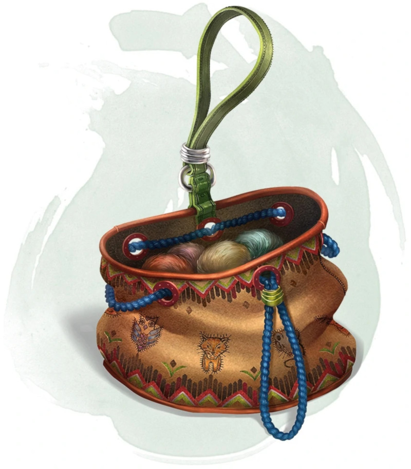

Bag of Tricks
[ Sac à malices ]
Wondrous item, uncommon
This ordinary bag, made from gray, rust, or tan cloth, appears empty. Reaching inside the bag, however, reveals the presence of a small, fuzzy object. The bag weighs 1/2 pound.
You can use an action to pull the fuzzy object from the bag and throw it up to 20 feet. When the object lands, it transforms into a creature you determine by rolling a d8 and consulting the table that corresponds to the bag's color. The creature vanishes at the next dawn or when it is reduced to 0 hit points.
The creature is friendly to you and your companions, and it acts on your turn. You can use a bonus action to command how the creature moves and what action it takes on its next turn, or to give it general orders, such as to attack your enemies. In the absence of such orders, the creature acts in a fashion appropriate to its nature.
Once three fuzzy objects have been pulled from the bag, the bag can't be used again until the next dawn.
Gray Bag of Tricks
Rust Bag of Tricks
Tan Bag of Tricks
You can use an action to pull the fuzzy object from the bag and throw it up to 20 feet. When the object lands, it transforms into a creature you determine by rolling a d8 and consulting the table that corresponds to the bag's color. The creature vanishes at the next dawn or when it is reduced to 0 hit points.
The creature is friendly to you and your companions, and it acts on your turn. You can use a bonus action to command how the creature moves and what action it takes on its next turn, or to give it general orders, such as to attack your enemies. In the absence of such orders, the creature acts in a fashion appropriate to its nature.
Once three fuzzy objects have been pulled from the bag, the bag can't be used again until the next dawn.
Gray Bag of Tricks
| d8 | Creature |
|---|---|
| 1 | Weasel |
| 2 | Giant rat |
| 3 | Badger |
| 4 | Boar |
| 5 | Panther |
| 6 | Giant badger |
| 7 | Dire wolf |
| 8 | Giant elk |
Rust Bag of Tricks
| d8 | Creature |
|---|---|
| 1 | Rat |
| 2 | Owl |
| 3 | Mastiff |
| 4 | Goat |
| 5 | Giant goat |
| 6 | Giant boar |
| 7 | Lion |
| 8 | Brown bear |
Tan Bag of Tricks
| d8 | Creature |
|---|---|
| 1 | Jackal |
| 2 | Ape |
| 3 | Baboon |
| 4 | Axe beak |
| 5 | Black bear |
| 6 | Giant weasel |
| 7 | Giant hyena |
| 8 | Tiger |
Dungeon Master´s Guide (SRD)
